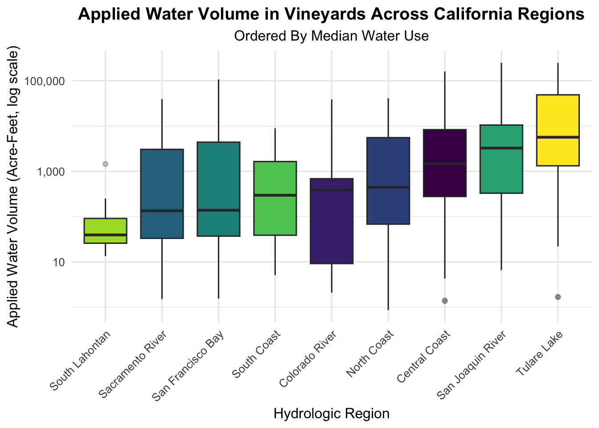
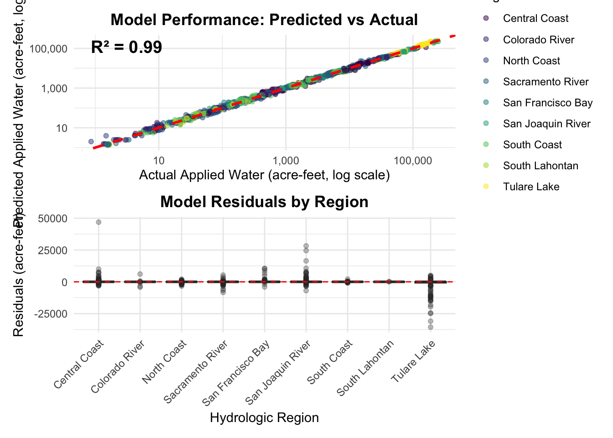
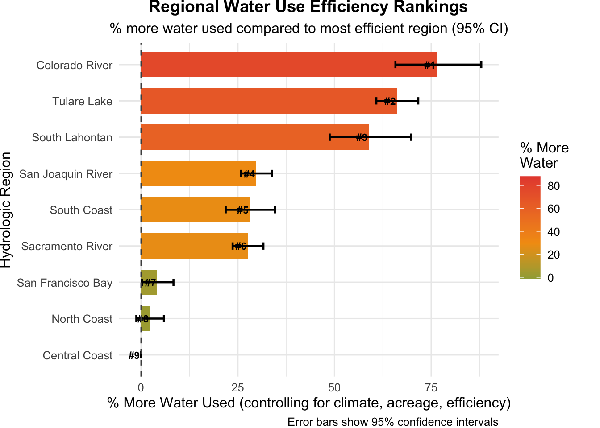

library(tidyverse)
library(here)
library(janitor)
library(readxl)
library(viridis)
library(car)
library(patchwork)
library(broom)Warning: package 'broom' was built under R version 4.5.2library(stringr)Will add after converting to TypeScript for my website
Insert DAG Here
Will add after converting to TypeScript for my website
library(tidyverse)
library(here)
library(janitor)
library(readxl)
library(viridis)
library(car)
library(patchwork)
library(broom)Warning: package 'broom' was built under R version 4.5.2library(stringr)The data is read in as a CSV file
New names:
New names:
New names:
New names:
New names:
New names:
• `Year` -> `Year...1`
• `RO` -> `RO...2`
• `HR` -> `HR...3`
• `PA` -> `PA...4`
• `DAU-Co` -> `DAU-Co...5`
• `Grain` -> `Grain...6`
• `Rice` -> `Rice...7`
• `Cotton` -> `Cotton...8`
• `Sugar Beet` -> `Sugar Beet...9`
• `Corn` -> `Corn...10`
• `Dry Beans` -> `Dry Beans...11`
• `Safflower` -> `Safflower...12`
• `Other Field` -> `Other Field...13`
• `Alfalfa` -> `Alfalfa...14`
• `Pasture` -> `Pasture...15`
• `Tomato Processing` -> `Tomato Processing...16`
• `Tomato Fresh` -> `Tomato Fresh...17`
• `Cucurbits` -> `Cucurbits...18`
• `Onion & Garlic` -> `Onion & Garlic...19`
• `Potatoes` -> `Potatoes...20`
• `Truck Crops` -> `Truck Crops...21`
• `Almonds & Pistachios` -> `Almonds & Pistachios...22`
• `Other Deciduous` -> `Other Deciduous...23`
• `Citrus & Subtropical` -> `Citrus & Subtropical...24`
• `Vineyard` -> `Vineyard...25`
• `` -> `...26`
• `Year` -> `Year...27`
• `RO` -> `RO...28`
• `HR` -> `HR...29`
• `PA` -> `PA...30`
• `DAUCo` -> `DAUCo...31`
• `Grain` -> `Grain...32`
• `Rice` -> `Rice...33`
• `Cotton` -> `Cotton...34`
• `Sugar Beets` -> `Sugar Beets...35`
• `Corn` -> `Corn...36`
• `Dry Beans` -> `Dry Beans...37`
• `Safflower` -> `Safflower...38`
• `Other Field` -> `Other Field...39`
• `Alfalfa` -> `Alfalfa...40`
• `Pasture` -> `Pasture...41`
• `Tomato Processing` -> `Tomato Processing...42`
• `Tomato Fresh` -> `Tomato Fresh...43`
• `Cucurbits` -> `Cucurbits...44`
• `Onion & Garlic` -> `Onion & Garlic...45`
• `Potatoes` -> `Potatoes...46`
• `Truck Crops` -> `Truck Crops...47`
• `Almonds & Pistachios` -> `Almonds & Pistachios...48`
• `Other Deciduous` -> `Other Deciduous...49`
• `Citrus & Subtropical` -> `Citrus & Subtropical...50`
• `Vineyard` -> `Vineyard...51`
• `` -> `...52`
• `Year` -> `Year...53`
• `RO` -> `RO...54`
• `HR` -> `HR...55`
• `PA` -> `PA...56`
• `DAU-Co` -> `DAU-Co...57`
• `Grain` -> `Grain...58`
• `Rice` -> `Rice...59`
• `Cotton` -> `Cotton...60`
• `Sugar Beet` -> `Sugar Beet...61`
• `Corn` -> `Corn...62`
• `Dry Beans` -> `Dry Beans...63`
• `Safflower` -> `Safflower...64`
• `Other Field` -> `Other Field...65`
• `Alfalfa` -> `Alfalfa...66`
• `Pasture` -> `Pasture...67`
• `Tomato Processing` -> `Tomato Processing...68`
• `Tomato Fresh` -> `Tomato Fresh...69`
• `Cucurbits` -> `Cucurbits...70`
• `Onion & Garlic` -> `Onion & Garlic...71`
• `Potatoes` -> `Potatoes...72`
• `Truck Crops` -> `Truck Crops...73`
• `Almonds & Pistachios` -> `Almonds & Pistachios...74`
• `Other Deciduous` -> `Other Deciduous...75`
• `Citrus & Subtropical` -> `Citrus & Subtropical...76`
• `Vineyard` -> `Vineyard...77`
• `` -> `...78`
• `Year` -> `Year...79`
• `RO` -> `RO...80`
• `HR` -> `HR...81`
• `PA` -> `PA...82`
• `DAUCo` -> `DAUCo...83`
• `Grain` -> `Grain...84`
• `Rice` -> `Rice...85`
• `Cotton` -> `Cotton...86`
• `Sugar Beet` -> `Sugar Beet...87`
• `Corn` -> `Corn...88`
• `Dry Beans` -> `Dry Beans...89`
• `Safflower` -> `Safflower...90`
• `Other Field` -> `Other Field...91`
• `Alfalfa` -> `Alfalfa...92`
• `Pasture` -> `Pasture...93`
• `Tomato Processing` -> `Tomato Processing...94`
• `Tomato Fresh` -> `Tomato Fresh...95`
• `Cucurbits` -> `Cucurbits...96`
• `Onion & Garlic` -> `Onion & Garlic...97`
• `Potatoes` -> `Potatoes...98`
• `Truck Crops` -> `Truck Crops...99`
• `Almonds & Pistachios` -> `Almonds & Pistachios...100`
• `Other Deciduous` -> `Other Deciduous...101`
• `Citrus & Subtropical` -> `Citrus & Subtropical...102`
• `Vineyard` -> `Vineyard...103`
• `` -> `...104`
• `Year` -> `Year...105`
• `RO` -> `RO...106`
• `HR` -> `HR...107`
• `PA` -> `PA...108`
• `DauCo` -> `DauCo...109`
• `Grain` -> `Grain...110`
• `Rice` -> `Rice...111`
• `Cotton` -> `Cotton...112`
• `Sugar Beets` -> `Sugar Beets...113`
• `Corn` -> `Corn...114`
• `Dry Beans` -> `Dry Beans...115`
• `Safflower` -> `Safflower...116`
• `Other Field` -> `Other Field...117`
• `Alfalfa` -> `Alfalfa...118`
• `Pasture` -> `Pasture...119`
• `Tomato Processing` -> `Tomato Processing...120`
• `Cucurbits` -> `Cucurbits...122`
• `Potatoes` -> `Potatoes...124`
• `Truck Crops` -> `Truck Crops...125`
• `Other Deciduous` -> `Other Deciduous...127`
• `Vineyard` -> `Vineyard...129`
• `Total AW` -> `Total AW...130`
• `` -> `...131`
• `Year` -> `Year...132`
• `RO` -> `RO...133`
• `HR` -> `HR...134`
• `PA` -> `PA...135`
• `DauCo` -> `DauCo...136`
• `Grain` -> `Grain...137`
• `Rice` -> `Rice...138`
• `Cotton` -> `Cotton...139`
• `Sugar Beets` -> `Sugar Beets...140`
• `Corn` -> `Corn...141`
• `Dry Beans` -> `Dry Beans...142`
• `Safflower` -> `Safflower...143`
• `Other Field Crops` -> `Other Field Crops...144`
• `Alfalfa` -> `Alfalfa...145`
• `Pasture` -> `Pasture...146`
• `Tomato Processing` -> `Tomato Processing...147`
• `Tomato Fresh` -> `Tomato Fresh...148`
• `Cucurbits` -> `Cucurbits...149`
• `Onions & Garlic` -> `Onions & Garlic...150`
• `Potatoes` -> `Potatoes...151`
• `Truck Crops` -> `Truck Crops...152`
• `Almonds & Pistachios` -> `Almonds & Pistachios...153`
• `Other Deciduous` -> `Other Deciduous...154`
• `Citrus & Subtropical` -> `Citrus & Subtropical...155`
• `Vineyard` -> `Vineyard...156`
• `Total AW` -> `Total AW...157`
• `` -> `...158`
• `Year` -> `Year...159`
• `RO` -> `RO...160`
• `HR` -> `HR...161`
• `PA` -> `PA...162`
• `DAUCo` -> `DAUCo...163`
• `Grain` -> `Grain...164`
• `Rice` -> `Rice...165`
• `Cotton` -> `Cotton...166`
• `Sugar Beets` -> `Sugar Beets...167`
• `Corn` -> `Corn...168`
• `Dry Beans` -> `Dry Beans...169`
• `Safflower` -> `Safflower...170`
• `Other Field` -> `Other Field...171`
• `Alfalfa` -> `Alfalfa...172`
• `Pasture` -> `Pasture...173`
• `Tomato Processing` -> `Tomato Processing...174`
• `Tomato Fresh` -> `Tomato Fresh...175`
• `Cucurbits` -> `Cucurbits...176`
• `Onion & Garlic` -> `Onion & Garlic...177`
• `Potatoes` -> `Potatoes...178`
• `Truck Crops` -> `Truck Crops...179`
• `Almonds & Pistachios` -> `Almonds & Pistachios...180`
• `Other Deciduous` -> `Other Deciduous...181`
• `Citrus & Subtropical` -> `Citrus & Subtropical...182`
• `Vineyard` -> `Vineyard...183`
• `Total AW` -> `Total AW...184`
• `` -> `...185`
• `Year` -> `Year...186`
• `RO` -> `RO...187`
• `HR` -> `HR...188`
• `PA` -> `PA...189`
• `DAU-Co` -> `DAU-Co...190`
• `Grain` -> `Grain...191`
• `Rice` -> `Rice...192`
• `Cotton` -> `Cotton...193`
• `Sugar Beets` -> `Sugar Beets...194`
• `Corn` -> `Corn...195`
• `Dry Beans` -> `Dry Beans...196`
• `Safflower` -> `Safflower...197`
• `Other Field` -> `Other Field...198`
• `Alfalfa` -> `Alfalfa...199`
• `Pasture` -> `Pasture...200`
• `Tomato Processing` -> `Tomato Processing...201`
• `Tomato Fresh` -> `Tomato Fresh...202`
• `Cucurbits` -> `Cucurbits...203`
• `Onion & Garlic` -> `Onion & Garlic...204`
• `Potatoes` -> `Potatoes...205`
• `Truck Crops` -> `Truck Crops...206`
• `Almonds & Pistachios` -> `Almonds & Pistachios...207`
• `Other Deciduous` -> `Other Deciduous...208`
• `Citrus & Subtropical` -> `Citrus & Subtropical...209`
• `Vineyard` -> `Vineyard...210`
• `Total AW` -> `Total AW...211`
• `` -> `...212`
• `Year` -> `Year...213`
• `RO` -> `RO...214`
• `HR` -> `HR...215`
• `PA` -> `PA...216`
• `DauCo` -> `DauCo...217`
• `Grain` -> `Grain...218`
• `Rice` -> `Rice...219`
• `Cotton` -> `Cotton...220`
• `Sugar Beets` -> `Sugar Beets...221`
• `Corn` -> `Corn...222`
• `Dry Beans` -> `Dry Beans...223`
• `Safflower` -> `Safflower...224`
• `Other Field Crops` -> `Other Field Crops...225`
• `Alfalfa` -> `Alfalfa...226`
• `Pasture` -> `Pasture...227`
• `Tomato Processing` -> `Tomato Processing...228`
• `Tomato Fresh` -> `Tomato Fresh...229`
• `Cucurbits` -> `Cucurbits...230`
• `Onions & Garlic` -> `Onions & Garlic...231`
• `Potatoes` -> `Potatoes...232`
• `Truck Crops` -> `Truck Crops...233`
• `Almonds & Pistachios` -> `Almonds & Pistachios...234`
• `Other Deciduous` -> `Other Deciduous...235`
• `Citrus & Subtropical` -> `Citrus & Subtropical...236`
• `Vineyard` -> `Vineyard...237`
• `Total AW` -> `Total AW...238`# Select vineyard data
vineyard_data <- final_data %>%
filter(Crop_Type == "Vineyard", Regional_AW_Vol > 0, Regional_ICA > 0) %>%
mutate(
across(Regional_AW_Vol:Regional_Ep_Vol, ~replace_na(., 0)),
efficiency = Regional_CF / 100,
aw_per_acre = Regional_AW_Vol / Regional_ICA,
log_aw = log(Regional_AW_Vol)
)
# Format Hydrologic Region Names
vineyard_data$HR <- gsub("0[0-9]_", "", vineyard_data$HR)
vineyard_data$HR <- gsub("10_", "", vineyard_data$HR)
vineyard_data$HR <- factor(vineyard_data$HR)regional_summary <- vineyard_data %>%
group_by(HR) %>%
summarise(
n = n(),
mean_AW = mean(Regional_AW_Vol),
median_AW = median(Regional_AW_Vol),
sd_AW = sd(Regional_AW_Vol),
se_AW = sd_AW / sqrt(n),
mean_CF = mean(Regional_CF)
) %>%
arrange(mean_AW)
print(regional_summary)# A tibble: 9 × 7
HR n mean_AW median_AW sd_AW se_AW mean_CF
<fct> <int> <dbl> <dbl> <dbl> <dbl> <dbl>
1 South Lahontan 23 129. 39.4 295. 61.6 0.800
2 South Coast 46 1288. 296. 2120. 313. 0.802
3 Sacramento River 206 3632. 135. 8249. 575. 0.905
4 North Coast 121 5937. 444. 10137. 922. 0.896
5 Colorado River 25 6749. 386. 13446. 2689. 0.804
6 Central Coast 163 9918. 1477. 22979. 1800. 0.872
7 San Francisco Bay 80 10136. 139. 25803. 2885. 0.861
8 San Joaquin River 182 17765. 3263. 41878. 3104. 0.877
9 Tulare Lake 166 38072. 5664. 58246. 4521. 0.846vineyard_data %>%
ggplot(aes(x = reorder(HR, Regional_AW_Vol, FUN = median),
y = Regional_AW_Vol)) +
geom_boxplot(aes(fill = HR), outlier.alpha = 0.3) +
scale_fill_viridis_d() +
scale_y_log10(labels = scales::comma) +
labs(
x = "Hydrologic Region",
y = "Applied Water Volume (Acre-Feet, log scale)",
title = "Applied Water Volume in Vineyards Across California Regions",
subtitle = "Ordered By Median Water Use"
) +
theme_minimal(base_size = 12) +
theme(
axis.text.x = element_text(angle = 45, hjust = 1),
legend.position = "none",
plot.title = element_text(hjust = 0.5, face = "bold"),
plot.subtitle = element_text(hjust = 0.5)
)
model_gamma <- glm(
Regional_AW_Vol ~
Regional_ETc_Vol +
Regional_Ep_Vol +
Regional_CF +
log(Regional_ICA) +
HR,
family = Gamma(link = "log"),
data = vineyard_data
)
summary(model_gamma)
Call:
glm(formula = Regional_AW_Vol ~ Regional_ETc_Vol + Regional_Ep_Vol +
Regional_CF + log(Regional_ICA) + HR, family = Gamma(link = "log"),
data = vineyard_data)
Coefficients:
Estimate Std. Error t value Pr(>|t|)
(Intercept) 1.818e+00 9.349e-02 19.451 < 2e-16 ***
Regional_ETc_Vol 1.325e-06 2.875e-07 4.608 4.60e-06 ***
Regional_Ep_Vol -1.062e-05 2.533e-06 -4.191 3.02e-05 ***
Regional_CF -1.213e+00 1.038e-01 -11.684 < 2e-16 ***
log(Regional_ICA) 1.007e+00 2.100e-03 479.672 < 2e-16 ***
HRColorado River 5.677e-01 3.212e-02 17.673 < 2e-16 ***
HRNorth Coast 2.239e-02 1.768e-02 1.266 0.206
HRSacramento River 2.435e-01 1.582e-02 15.395 < 2e-16 ***
HRSan Francisco Bay 4.107e-02 1.997e-02 2.056 0.040 *
HRSan Joaquin River 2.606e-01 1.566e-02 16.646 < 2e-16 ***
HRSouth Coast 2.473e-01 2.537e-02 9.748 < 2e-16 ***
HRSouth Lahontan 4.628e-01 3.376e-02 13.710 < 2e-16 ***
HRTulare Lake 5.076e-01 1.677e-02 30.265 < 2e-16 ***
---
Signif. codes: 0 '***' 0.001 '**' 0.01 '*' 0.05 '.' 0.1 ' ' 1
(Dispersion parameter for Gamma family taken to be 0.02072959)
Null deviance: 5742.40 on 1011 degrees of freedom
Residual deviance: 21.09 on 999 degrees of freedom
AIC: 12495
Number of Fisher Scoring iterations: 4# Null model (without HR)
model_null <- glm(
Regional_AW_Vol ~
Regional_ETc_Vol +
Regional_Ep_Vol +
Regional_CF +
log(Regional_ICA),
family = Gamma(link = "log"),
data = vineyard_data
)
lrt <- anova(model_null, model_gamma, test = "LRT")
print(lrt)Analysis of Deviance Table
Model 1: Regional_AW_Vol ~ Regional_ETc_Vol + Regional_Ep_Vol + Regional_CF +
log(Regional_ICA)
Model 2: Regional_AW_Vol ~ Regional_ETc_Vol + Regional_Ep_Vol + Regional_CF +
log(Regional_ICA) + HR
Resid. Df Resid. Dev Df Deviance Pr(>Chi)
1 1007 50.467
2 999 21.090 8 29.377 < 2.2e-16 ***
---
Signif. codes: 0 '***' 0.001 '**' 0.01 '*' 0.05 '.' 0.1 ' ' 1# Create sample data for percent Hispanic and percent poverty
test_data <- expand.grid(
"log(Regional_ICA)" = seq(0, 75000, by = 100),
"Regional_CF" = seq(0, 1, by = 0.01)
)
cat("\n--- INTERPRETATION ---\n")
--- INTERPRETATION ---cat("Chi-square statistic:", lrt$Deviance[2], "\n")Chi-square statistic: 29.37665 cat("Degrees of freedom:", lrt$Df[2], "\n")Degrees of freedom: 8 cat("P-value:", lrt$`Pr(>Chi)`[2], "\n")P-value: 1.116069e-300 if (lrt$`Pr(>Chi)`[2] < 0.001) {
cat("\nCONCLUSION: We reject the null hypothesis (p < 0.001).\n")
cat("There ARE significant differences in water use between regions,\n")
cat("even after controlling for climate, efficiency, and vineyard size.\n\n")
} else if (lrt$`Pr(>Chi)`[2] < 0.05) {
cat("\nCONCLUSION: We reject the null hypothesis (p < 0.05).\n")
cat("There are significant differences in water use between regions.\n\n")
} else {
cat("\nCONCLUSION: We fail to reject the null hypothesis (p > 0.05).\n")
cat("No significant evidence of regional differences in water use.\n\n")
}
CONCLUSION: We reject the null hypothesis (p < 0.001).
There ARE significant differences in water use between regions,
even after controlling for climate, efficiency, and vineyard size.# Type III Anova for individual predictors
cat("\n=== TYPE III ANOVA: INDIVIDUAL PREDICTOR SIGNIFICANCE ===\n")
=== TYPE III ANOVA: INDIVIDUAL PREDICTOR SIGNIFICANCE ===anova_results <- Anova(model_gamma, type = "III", test.statistic = "Wald")
print(anova_results)Analysis of Deviance Table (Type III tests)
Response: Regional_AW_Vol
Df Chisq Pr(>Chisq)
(Intercept) 1 378.348 < 2.2e-16 ***
Regional_ETc_Vol 1 21.230 4.074e-06 ***
Regional_Ep_Vol 1 17.566 2.775e-05 ***
Regional_CF 1 136.514 < 2.2e-16 ***
log(Regional_ICA) 1 230084.978 < 2.2e-16 ***
HR 8 1391.168 < 2.2e-16 ***
---
Signif. codes: 0 '***' 0.001 '**' 0.01 '*' 0.05 '.' 0.1 ' ' 1true_params <- coef(model_gamma)
true_dispersion <- summary(model_gamma)$dispersion
simulate_vineyard_data <- function(n_obs = 1000) {
# Sample from original data distributions
sim_data <- vineyard_data %>%
sample_n(n_obs, replace = TRUE) %>%
select(Regional_ETc_Vol, Regional_Ep_Vol, Regional_CF, Regional_ICA, HR)
# Calculate linear predictor using original data structure
X <- model.matrix(~ Regional_ETc_Vol + Regional_Ep_Vol + Regional_CF +
log(Regional_ICA) + HR, data = sim_data)
eta <- X %*% true_params
mu <- exp(eta)
# Simulate response
shape_param <- 1 / true_dispersion
sim_data$Regional_AW_Vol <- rgamma(
n_obs,
shape = shape_param,
scale = as.vector(mu) * true_dispersion
)
return(sim_data)
}
# Run simulation
set.seed(123)
vineyard_sim <- simulate_vineyard_data(n_obs = 1000)
# Refit model to simulated data
validation_model <- glm(
Regional_AW_Vol ~ Regional_ETc_Vol + Regional_Ep_Vol + Regional_CF +
log(Regional_ICA) + HR,
family = Gamma(link = "log"),
data = vineyard_sim
)# Compare parameters
param_comparison <- data.frame(
Parameter = names(true_params),
True = true_params,
Recovered = coef(validation_model),
Difference = true_params - coef(validation_model),
Pct_Error = abs((true_params - coef(validation_model)) / true_params * 100)
)
print(param_comparison) Parameter True Recovered
(Intercept) (Intercept) 1.818405e+00 1.811603e+00
Regional_ETc_Vol Regional_ETc_Vol 1.324757e-06 1.216532e-06
Regional_Ep_Vol Regional_Ep_Vol -1.061820e-05 -1.166770e-05
Regional_CF Regional_CF -1.213123e+00 -1.209873e+00
log(Regional_ICA) log(Regional_ICA) 1.007473e+00 1.007116e+00
HRColorado River HRColorado River 5.676952e-01 5.764956e-01
HRNorth Coast HRNorth Coast 2.238597e-02 2.919363e-02
HRSacramento River HRSacramento River 2.435418e-01 2.379834e-01
HRSan Francisco Bay HRSan Francisco Bay 4.106864e-02 2.956328e-02
HRSan Joaquin River HRSan Joaquin River 2.606004e-01 2.714478e-01
HRSouth Coast HRSouth Coast 2.472990e-01 2.588836e-01
HRSouth Lahontan HRSouth Lahontan 4.628106e-01 4.645619e-01
HRTulare Lake HRTulare Lake 5.076261e-01 5.226045e-01
Difference Pct_Error
(Intercept) 6.802842e-03 0.37411032
Regional_ETc_Vol 1.082245e-07 8.16938424
Regional_Ep_Vol 1.049501e-06 9.88398327
Regional_CF -3.249487e-03 0.26786139
log(Regional_ICA) 3.578024e-04 0.03551483
HRColorado River -8.800370e-03 1.55019267
HRNorth Coast -6.807652e-03 30.41034414
HRSacramento River 5.558387e-03 2.28231298
HRSan Francisco Bay 1.150536e-02 28.01495894
HRSan Joaquin River -1.084740e-02 4.16246462
HRSouth Coast -1.158459e-02 4.68444571
HRSouth Lahontan -1.751329e-03 0.37841167
HRTulare Lake -1.497839e-02 2.95067469cat("\nParameter Recovery Summary:\n")
Parameter Recovery Summary:cat("Mean absolute % error:", round(mean(param_comparison$Pct_Error, na.rm = TRUE), 2), "%\n")Mean absolute % error: 7.17 %cat("Max absolute % error:", round(max(param_comparison$Pct_Error, na.rm = TRUE), 2), "%\n\n")Max absolute % error: 30.41 %# Get predictions
predicted <- predict(model_gamma, type = "response")
comparison <- data.frame(
Actual = vineyard_data$Regional_AW_Vol,
Predicted = predicted,
Residual = residuals(model_gamma, type = "response"),
HR = vineyard_data$HR
)
r_squared <- cor(comparison$Actual, comparison$Predicted)^2
# Predicted vs Actual
p1 <- ggplot(comparison, aes(x = Actual, y = Predicted)) +
geom_point(aes(color = HR), alpha = 0.5) +
geom_abline(slope = 1, intercept = 0, color = "red",
linetype = "dashed", linewidth = 1) +
scale_x_log10(labels = scales::comma) +
scale_y_log10(labels = scales::comma) +
scale_color_viridis_d() +
annotate("text", x = min(comparison$Actual), y = max(comparison$Predicted),
label = paste0("R² = ", round(r_squared, 3)),
hjust = 0, vjust = 1, size = 5, fontface = "bold") +
labs(
title = "Model Performance: Predicted vs Actual",
x = "Actual Applied Water (acre-feet, log scale)",
y = "Predicted Applied Water (acre-feet, log scale)",
color = "Region"
) +
theme_minimal(base_size = 11) +
theme(
plot.title = element_text(hjust = 0.5, face = "bold"),
legend.position = "right"
)
# Residuals by region
p2 <- ggplot(comparison, aes(x = HR, y = Residual)) +
geom_boxplot(aes(fill = HR), outlier.alpha = 0.3) +
geom_hline(yintercept = 0, linetype = "dashed", color = "red") +
scale_fill_viridis_d() +
labs(
title = "Model Residuals by Region",
x = "Hydrologic Region",
y = "Residuals (acre-feet)"
) +
theme_minimal(base_size = 11) +
theme(
axis.text.x = element_text(angle = 45, hjust = 1),
legend.position = "none",
plot.title = element_text(hjust = 0.5, face = "bold")
)
print(p1 / p2)
# Extract regional coefficients
regional_coefs <- tidy(model_gamma, conf.int = TRUE) %>%
filter(str_starts(term, "HR")) %>% # Updated from str_detect
mutate(
region = str_remove(term, "^HR"),
pct_more_water = (exp(estimate) - 1) * 100,
ci_low_pct = (exp(conf.low) - 1) * 100,
ci_high_pct = (exp(conf.high) - 1) * 100
) %>%
bind_rows(
tibble(
term = "HR(Reference)",
estimate = 0,
std.error = 0, # Added required column
statistic = 0, # Added required column
p.value = NA,
conf.low = 0,
conf.high = 0,
region = levels(vineyard_data$HR)[1],
pct_more_water = 0,
ci_low_pct = 0,
ci_high_pct = 0
)
) %>%
arrange(desc(estimate)) # Fixed ranking direction
# Add ranking
regional_coefs <- regional_coefs %>%
mutate(rank = row_number())
# Visualize
p_rank <- ggplot(regional_coefs,
aes(x = reorder(region, estimate), y = pct_more_water)) +
geom_col(aes(fill = pct_more_water), width = 0.7) +
geom_errorbar(aes(ymin = ci_low_pct, ymax = ci_high_pct),
width = 0.2, linewidth = 0.8) +
geom_text(aes(label = paste0("#", rank)),
hjust = 1.1, vjust = 0.5, # Fixed text positioning
fontface = "bold", size = 3) +
geom_hline(yintercept = 0, linetype = "dashed", color = "gray30") +
scale_fill_gradient2(
low = "#27AE60", mid = "#F39C12", high = "#E74C3C",
midpoint = 30,
name = "% More\nWater",
limits = c(min(regional_coefs$ci_low_pct), max(regional_coefs$ci_high_pct))
) +
coord_flip(clip = "off") + # Allow text outside plot area
labs(
title = "Regional Water Use Efficiency Rankings",
subtitle = "% more water used compared to most efficient region (95% CI)",
x = "Hydrologic Region",
y = "% More Water Used (controlling for climate, acreage, efficiency)",
caption = "Error bars show 95% confidence intervals"
) +
theme_minimal(base_size = 12) +
theme(
plot.title = element_text(hjust = 0.5, face = "bold", size = 14),
plot.subtitle = element_text(hjust = 0.5),
legend.position = "right",
plot.margin = margin(r = 20) # Extra space for rank numbers
)
print(p_rank)
# ============================================================================
# 9. SUMMARY STATISTICS FOR BLOG POST
# ============================================================================
cat("\n=== KEY FINDINGS FOR BLOG POST ===\n\n")
=== KEY FINDINGS FOR BLOG POST ===cat("1. MODEL FIT:\n")1. MODEL FIT:cat(" - Pseudo R²:", round(1 - (deviance(model_gamma) / model_gamma$null.deviance), 3), "\n") - Pseudo R²: 0.996 cat(" - Model explains", round(100 * (1 - deviance(model_gamma) / model_gamma$null.deviance), 1), "% of deviance\n\n") - Model explains 99.6 % of deviancecat("2. REGIONAL DIFFERENCES:\n")2. REGIONAL DIFFERENCES:cat(" - Chi-square test: χ² =", round(lrt$Deviance[2], 2),
", df =", lrt$Df[2], ", p <", format.pval(lrt$`Pr(>Chi)`[2], digits = 3), "\n") - Chi-square test: χ² = 29.38 , df = 8 , p < <2e-16 cat(" - Regions differ significantly in water use\n\n") - Regions differ significantly in water usecat("3. MOST EFFICIENT REGIONS (least water use):\n")3. MOST EFFICIENT REGIONS (least water use):for(i in 1:3) {
cat(" ", i, ". ", regional_coefs$region[i],
" (", round(regional_coefs$pct_more_water[i], 1), "% more than reference)\n", sep = "")
} 1. Colorado River (76.4% more than reference)
2. Tulare Lake (66.1% more than reference)
3. South Lahontan (58.9% more than reference)cat("\n4. LEAST EFFICIENT REGIONS (most water use):\n")
4. LEAST EFFICIENT REGIONS (most water use):n_regions <- nrow(regional_coefs)
for(i in n_regions:(n_regions-2)) {
cat(" ", i, ". ", regional_coefs$region[i],
" (+", round(regional_coefs$pct_more_water[i], 1), "% more water)\n", sep = "")
} 9. Central Coast (+0% more water)
8. North Coast (+2.3% more water)
7. San Francisco Bay (+4.2% more water)cat("\n5. KEY DRIVERS OF WATER USE:\n")
5. KEY DRIVERS OF WATER USE:cat(" - Irrigation efficiency (CF): β =", round(coef(model_gamma)["Regional_CF"], 3),
" (p < 0.001)\n") - Irrigation efficiency (CF): β = -1.213 (p < 0.001)cat(" - Vineyard size (log ICA): β =", round(coef(model_gamma)["log(Regional_ICA)"], 3),
" (p < 0.001)\n") - Vineyard size (log ICA): β = 1.007 (p < 0.001)cat(" - Effective precipitation (Ep): β =", format(coef(model_gamma)["Regional_Ep_Vol"], scientific = TRUE),
" (p < 0.001)\n\n") - Effective precipitation (Ep): β = -1.06182e-05 (p < 0.001)